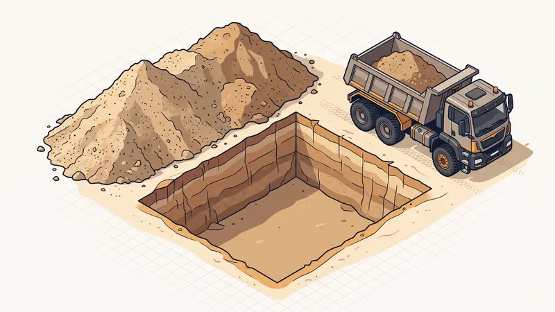

Comment Calculer le Volume de Terrassement : Cubage, Foisonnement & Métré 2026
Avant de lancer un chantier de terrassement, une question revient systématiquement : combien de mètres cubes faut-il excaver, évacuer ou rapporter ? Savoir calculer le volume de terrassement (on parle aussi de cubage ou de métré) est la clé d'un budget maîtrisé. Une erreur de cubage, et c'est le coût d'évacuation qui explose ou le camion de remblai qui repart à moitié vide. Dans ce guide d'expert rédigé par STP Terrassement à Aix-en-Provence, nous vous donnons les formules, les coefficients de foisonnement matériau par matériau et un exemple chiffré complet, de la fouille jusqu'au nombre de bennes.

La formule de base du cubage de terrassement
Le calcul d'un volume de terrassement repose sur une formule simple, à condition de travailler avec des dimensions exprimées en mètres :
Volume (m³) = Longueur (m) × Largeur (m) × Profondeur (m)
Le résultat s'exprime en mètres cubes (m³), l'unité de référence de tout devis de terrassement. Par exemple, une fouille de 5 m de long, 2 m de large et 1 m de profondeur représente 5 × 2 × 1 = 10 m³ de déblais. Cette valeur correspond au volume « en place », c'est-à-dire le volume de terre tel qu'il occupe le sol avant d'être remué.
Calculer le volume d'une surface irrégulière
Tous les chantiers ne sont pas de simples rectangles. Pour une emprise irrégulière (terrain en L, contour de piscine, talus), la méthode consiste à découper la surface en volumes géométriques simples : rectangles, triangles, demi-cercles. On calcule chaque sous-volume séparément, puis on additionne le tout. Pour une partie triangulaire, on applique : (base × hauteur ÷ 2) × profondeur. Cette technique du découpage évite les approximations grossières et fiabilise le métré.
Calculer le cubage d'un terrain en pente
Sur un terrain en pente, la profondeur de décaissement n'est pas constante. Deux méthodes d'expert s'imposent :
- La méthode des moyennes : on mesure la hauteur de déblai à plusieurs points (les quatre coins et le centre de la zone), on calcule la moyenne de ces hauteurs, puis on multiplie cette profondeur moyenne par la surface. Plus les points de mesure sont nombreux, plus le résultat est précis.
- La méthode déblai-remblai : sur un terrain en dévers, on cherche à équilibrer les volumes excavés (déblais) avec les volumes rapportés (remblais) pour créer une plateforme plane. Bien optimisé, ce principe limite, voire supprime, les frais d'évacuation et d'apport de matériaux.

Le foisonnement : le piège n°1 du calcul de volume
C'est l'erreur que font tous les particuliers. Une fois extraite de son lit naturel, la terre se décompacte, des vides d'air s'y créent et son volume augmente : c'est le foisonnement. Concrètement, 10 m³ de terre creusée ne tiennent jamais dans 10 m³ de benne. Le calcul du volume à évacuer impose donc d'appliquer un coefficient de foisonnement propre à chaque matériau :
Volume foisonné (m³) = Volume en place (m³) × Coefficient de foisonnement
| Matériau | Coefficient de foisonnement | Augmentation de volume |
|---|---|---|
| Sable | 1,10 | +10 % |
| Tout-venant / grave | 1,15 | +15 % |
| Terre végétale | 1,25 | +25 % |
| Argile | 1,30 | +30 % |
| Calcaire / roche | 1,50 | +50 % |
En région PACA, et particulièrement autour d'Aix-en-Provence, les sols calcaires sont fréquents : leur coefficient élevé (1,50) gonfle fortement le volume à transporter, d'où l'intérêt d'un diagnostic de sol G1/G2 en amont pour anticiper le bon coefficient.
Le tassement du remblai : le coefficient inverse
Pour le remblai, le phénomène s'inverse. Un matériau d'apport, une fois mis en place et compacté par couches, perd du volume : c'est le tassement. On applique alors un coefficient compris entre 0,85 et 0,90. Autrement dit, pour obtenir 100 m³ de remblai compacté en place, il faut commander environ 110 à 120 m³ de matériau livré, car une partie du volume « disparaît » au compactage. Oublier ce coefficient, c'est se retrouver avec une plateforme sous-dimensionnée en fin de chantier.
Exemple de chantier chiffré : une plateforme à Simiane-Collongue
Prenons un cas concret pour appliquer toutes ces notions. Un client souhaite créer une plateforme de 10 m × 8 m pour un futur garage, avec un décaissement de 0,40 m dans un sol de terre végétale.
- Volume en place : 10 × 8 × 0,40 = 32 m³ de déblais à excaver.
- Volume foisonné à évacuer : 32 × 1,25 (terre végétale) = 40 m³. En retenant un coefficient prudent de 1,30 (terre mêlée d'argile), on monte à environ 42 m³ à charger en camion.
- Nombre de voyages : avec une benne de 8 m³, 42 ÷ 8 ≈ 6 voyages. Avec un camion 8x4 de 15 m³, 42 ÷ 15 ≈ 3 voyages seulement.
On voit immédiatement l'impact du foisonnement : on évacue 42 m³ alors qu'on n'a creusé que 32 m³. C'est ce volume foisonné, et non le volume en place, qui pilote le coût de l'évacuation des gravats et le nombre de rotations de camion. Une estimation faite sur les 32 m³ initiaux aurait sous-évalué le poste évacuation d'environ 30 %.
Faites Calculer Votre Cubage Gratuitement
Plutôt que de risquer une erreur de métré, confiez le calcul à un pro. STP Terrassement réalise votre cubage déblais/remblai et votre devis détaillé sous 24h, à Aix-en-Provence et dans toute la PACA.
Demandez votre devis gratuitConvertir les m³ en tonnes et en nombre de bennes
Les décharges et les fournisseurs facturent souvent au poids (tonne) et non au volume. Pour passer du m³ à la tonne, on multiplie le volume par la densité du matériau. Voici un tableau d'équivalences pratique pour vos conversions et l'estimation du nombre de bennes :
| Matériau | Densité (poids de 1 m³) | Bennes nécessaires pour ~42 m³ foisonnés |
|---|---|---|
| Terre végétale | 1,3 à 1,5 t/m³ | 6 bennes de 8 m³ — 3 de 15 m³ — 2 de 30 m³ |
| Argile humide | 1,5 à 1,8 t/m³ | 6 bennes de 8 m³ — 3 de 15 m³ — 2 de 30 m³ |
| Tout-venant / grave | 1,8 à 2,0 t/m³ | 6 bennes de 8 m³ — 3 de 15 m³ — 2 de 30 m³ |
| Calcaire / roche concassée | 2,2 à 2,5 t/m³ | 6 bennes de 8 m³ — 3 de 15 m³ — 2 de 30 m³ |
Pour calculer le nombre de bennes, la règle est : volume foisonné ÷ capacité de la benne. Prévoyez toujours une légère marge, car une benne n'est jamais remplie à ras bord. À l'inverse, pour estimer le tonnage à mettre en décharge, multipliez le volume foisonné par la densité (ex. 42 m³ × 1,4 ≈ 59 tonnes de terre végétale).
Du volume au budget : pourquoi le cubage pilote le devis
Le volume calculé est le socle de tout le chiffrage. Il intervient à trois niveaux :
- Le coût d'excavation dépend du volume en place et de la dureté du sol (voir notre guide prix terrassement au m²).
- Le coût d'évacuation dépend du volume foisonné et du nombre de rotations de camion (détaillé dans prix évacuation des gravats).
- Le coût du remblai dépend du volume à apporter, majoré du tassement, notamment pour les fondations de maison.
Maîtriser le cubage permet donc de comparer objectivement plusieurs devis et de repérer une estimation fantaisiste au premier coup d'oeil.
Les erreurs courantes à éviter
- Oublier le foisonnement. C'est l'erreur la plus fréquente : facturer l'évacuation sur le volume en place sous-estime le coût réel de 10 à 50 % selon le matériau.
- Confondre volume en place et volume foisonné. Le premier sert à l'excavation, le second au transport. Les mélanger fausse tout le devis.
- Négliger le tassement du remblai. Commander pile le volume théorique conduit à une plateforme sous-dimensionnée une fois compactée.
- Mesurer une profondeur unique sur un terrain en pente. Sans méthode des moyennes, le cubage est faux dès le départ.
- Travailler avec des unités mélangées. Mélanger centimètres et mètres dans la formule donne des résultats absurdes : convertissez tout en mètres avant de multiplier.
- Sous-estimer la nature du sol. Sans étude de sol, on applique un mauvais coefficient de foisonnement et on se trompe sur le tonnage à évacuer.
FAQ : Vos questions sur le calcul du volume de terrassement
Comment calculer le volume de terrassement en m³ ?
La formule de base est : volume = longueur × largeur × profondeur, le tout exprimé en mètres pour obtenir un résultat en mètres cubes (m³). Par exemple, une plateforme de 10 m × 8 m décaissée sur 0,40 m représente 10 × 8 × 0,40 = 32 m³ de déblais en place.
Qu'est-ce que le foisonnement des terres ?
Le foisonnement est l'augmentation de volume que subit la terre une fois extraite et ameublie. Un déblai compact en place gonfle de 10 à 50 % selon le matériau. Pour connaître le volume à transporter en benne, on multiplie le volume en place par le coefficient de foisonnement (1,10 pour le sable, jusqu'à 1,50 pour la roche).
Comment calculer le volume foisonné à évacuer ?
Volume foisonné = volume en place × coefficient de foisonnement. Par exemple, 32 m³ de terre végétale en place (coefficient 1,25) deviennent 32 × 1,25 = 40 m³ à charger dans les camions. C'est ce volume foisonné qui détermine le nombre de bennes et le coût d'évacuation.
Comment calculer le volume de remblai à apporter ?
Pour le remblai, il faut intégrer le tassement après compactage. Un matériau d'apport perd environ 10 à 15 % de volume une fois compacté (coefficient 0,85 à 0,90). Pour obtenir 100 m³ de remblai compacté en place, il faut donc commander environ 115 à 120 m³ de matériau livré foisonné.
Comment calculer le cubage d'un terrain en pente ?
Sur un terrain en pente, on utilise la méthode des moyennes : on mesure la profondeur de décaissement à plusieurs points (coins et milieu), on en fait la moyenne, puis on multiplie par la surface. La méthode déblai-remblai consiste à compenser les volumes excavés par les volumes rapportés pour limiter l'évacuation.
Combien de tonnes représente 1 m³ de terre ?
Cela dépend de la densité du matériau. En moyenne, 1 m³ de terre végétale pèse environ 1,3 à 1,5 tonne, 1 m³ de tout-venant ou de grave environ 1,8 à 2,0 tonnes, et 1 m³ de roche calcaire jusqu'à 2,2 à 2,5 tonnes. La conversion m³ vers tonnes est indispensable pour le coût de mise en décharge facturée au poids.
Combien de voyages de camion pour évacuer un terrassement ?
On divise le volume foisonné par la capacité de la benne. Pour 42 m³ foisonnés et une benne de 8 m³, il faut 42 ÷ 8 ≈ 6 voyages. Avec un camion 15 m³, 3 voyages suffisent. Mieux vaut prévoir une légère marge car les bennes ne sont jamais remplies à ras.
Pourquoi faire calculer son cubage par un professionnel ?
Un métré précis évite les mauvaises surprises : sous-estimer le foisonnement peut doubler le poste évacuation, et surestimer le remblai gonfle inutilement le devis. Un terrassier expérimenté comme STP Terrassement intègre la nature réelle du sol, le foisonnement et le tassement pour chiffrer un budget fiable dès le devis.
Pour aller plus loin
Pourquoi faire appel à un pro comme STP Terrassement
Confier votre calcul de volume et votre chantier à STP Terrassement, c'est s'appuyer sur une entreprise locale implantée à Simiane-Collongue (13109) et intervenant chaque jour à Aix-en-Provence et dans toute la région PACA. Nos équipes établissent un métré précis intégrant la nature réelle du sol, le bon coefficient de foisonnement et le tassement du remblai, pour un budget fiable dès le devis. Nous disposons d'un parc d'engins récents (mini-pelles 1,5 t à pelles 20 t, camions 8x4), d'une garantie décennale en cours de validité et de plus de 15 ans d'expérience cumulée sur des chantiers de terrassement. Devis détaillé gratuit et sans engagement, plannings respectés, budget tenu. Demandez votre devis gratuit en ligne, écrivez-nous via notre page contact ou appelez-nous au 07 45 14 20 49 pour échanger directement avec un chargé d'affaires.